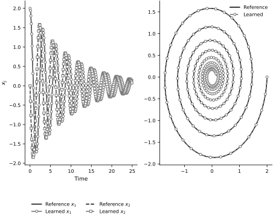
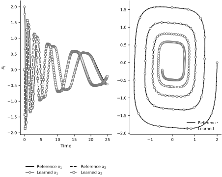
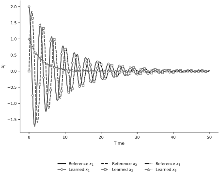
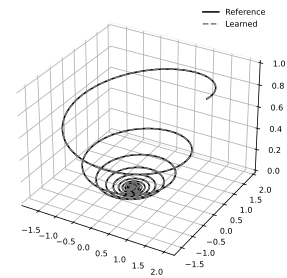

Sparse Identification of Nonlinear Dynamics#
Sparse Identification of Nonlinear Dynamics (SINDy) is a method to identify the governing equations of a dynamical system from data. The method was introduced by Brunton et al. (2016) and has since become widely used. We are not going to outline the details of the method here. These are covered in the hand-written notes. Here we will replicate the results of the paper. For further details, see the appendix of Brunton et al. (2016).
Example 1ai: Linear dynamics#
Consider the linear system:
\begin{align} \dot{x}_1 &= -0.1 x_1 + 2 x_2 \ \dot{x}_2 &= -2 x_1 - 0.1 x_2 \end{align}
We will generate data from this system without noise, fit a high dimensional polynomial of fifth order and see if we can identify the coefficients correctly.
import numpy as np
import scipy
A = np.array([
[-0.1, 2],
[-2, -0.1]
])
ts = np.linspace(0.0, 25.0, 10_000)
x0 = np.array([2.0, 0.0])
xs = scipy.integrate.odeint(lambda x, t: A @ x, x0, ts)
dxs = A @ xs.T
Let’s set up the regression problem. We are going to solve a different one for \(x_1\) and \(x_2\). We write:
where \(\boldsymbol{\phi}(\mathbf{x})\) is a two-dimensional polynomial of fifth order and \(\boldsymbol{\theta}_j\) are the coefficients we want to identify.
We will fit \(\boldsymbol{\theta}_j\) by solving the following optimization problem:
where \(\dot{X}_j\) is the time derivative of \(x_j\) and \(\Phi\) is the matrix of \(\boldsymbol{\phi}(\mathbf{x})\) evaluated at the data points (the design matrix).
from sklearn.preprocessing import PolynomialFeatures
from sklearn.linear_model import LassoCV
f_approx = PolynomialFeatures(degree=5)
Phi = f_approx.fit_transform(xs)
thetas = []
for j in range(2):
clf = LassoCV(fit_intercept=False, alphas=10_000, eps=1e-5)
dx = dxs[j, :]
clf.fit(Phi, dx)
thetas.append(clf.coef_)
And here are how the coefficients compare:
for j in range(2):
print(f"Dynamics of x_{j+1}:")
print("-" * 20)
for i, name in enumerate(f_approx.get_feature_names_out()):
print(f"{name:10} = {thetas[j][i]:.2f}")
We observe an almost perfect identification of the dynamics.
Let’s simulate the learned dynamics to see what we get.
def f_learned(x, t, thetas, f_approx):
phi = f_approx.fit_transform(x.reshape(1, -1)).flatten()
dx = np.zeros(x.shape[0])
for j in range(x.shape[0]):
dx[j] = np.dot(thetas[j], phi)
return dx
xs_learned = scipy.integrate.odeint(lambda x, t: f_learned(x, t, thetas, f_approx), x0, ts)
Let’s visualize the results:
fig, ax = plt.subplots(1,2, figsize=FIGURE_SIZES["full_standard"])
component_styles = ['-', '--']
component_markers = ['o', 's']
for j in range(2):
ax[0].plot(ts, xs[:, j], color='black', linestyle=component_styles[j],
label=rf'Reference $x_{j+1}$')
ax[0].plot(ts, xs_learned[:, j], color='0.45', linestyle=component_styles[j],
marker=component_markers[j], markevery=40, markerfacecolor='white',
label=rf'Learned $x_{j+1}$')
ax[0].set(xlabel="Time", ylabel="$x_j$")
ax[0].legend(loc='upper center', bbox_to_anchor=(0.5, -0.20), ncol=2)
ax[1].plot(xs[:,0], xs[:,1], color='black', linestyle='-', label='Reference')
ax[1].plot(xs_learned[:,0], xs_learned[:,1], color='0.45', linestyle='--',
marker='o', markevery=40, markerfacecolor='white', label='Learned')
ax[1].legend(loc='best')
finalize_axes(keep_box=False)
array([<Axes: xlabel='Time', ylabel='$x_j$'>, <Axes: >], dtype=object)

This reproduces the left column of Fig. 2 in the appendix of Brunton et al. (2016).
Example 1aii: Cubic non-linearity#
This example is as above, but with a cubic non-linearity:
\begin{align} \dot{x}_1 &= -0.1 x_1^3 + 2 x_2^3 \ \dot{x}_2 &= -2 x_1^3 - 0.1 x_2^3 \end{align}
Let’s generate the data:
xs = scipy.integrate.odeint(lambda x, t: A @ (x ** 3), x0, ts)
dxs = A @ (xs ** 3).T
We fit the fifth degree polynomial just like before:
Phi = f_approx.fit_transform(xs)
thetas = []
for j in range(2):
clf = LassoCV(fit_intercept=False, alphas=10_000, eps=1e-5)
dx = dxs[j, :]
clf.fit(Phi, dx)
thetas.append(clf.coef_)
The coefficients:
for j in range(2):
print(f"Dynamics of x_{j+1}:")
print("-" * 20)
for i, name in enumerate(f_approx.get_feature_names_out()):
print(f"{name:10} = {thetas[j][i]:.2f}")
And here are the predictions:
xs_learned = scipy.integrate.odeint(lambda x, t: f_learned(x, t, thetas, f_approx), x0, ts)
fig, ax = plt.subplots(1,2, figsize=FIGURE_SIZES["full_standard"])
component_styles = ['-', '--']
component_markers = ['o', 's']
for j in range(2):
ax[0].plot(ts, xs[:, j], color='black', linestyle=component_styles[j],
label=rf'Reference $x_{j+1}$')
ax[0].plot(ts, xs_learned[:, j], color='0.45', linestyle=component_styles[j],
marker=component_markers[j], markevery=40, markerfacecolor='white',
label=rf'Learned $x_{j+1}$')
ax[0].set(xlabel="Time", ylabel="$x_j$")
ax[0].legend(loc='upper center', bbox_to_anchor=(0.5, -0.20), ncol=2)
ax[1].plot(xs[:,0], xs[:,1], color='black', linestyle='-', label='Reference')
ax[1].plot(xs_learned[:,0], xs_learned[:,1], color='0.45', linestyle='--',
marker='o', markevery=40, markerfacecolor='white', label='Learned')
ax[1].legend(loc='best')
finalize_axes(keep_box=False)
array([<Axes: xlabel='Time', ylabel='$x_j$'>, <Axes: >], dtype=object)

This is the second column of Fig. 2 in the appendix of Brunton et al. (2016).
Example 1b: Three-dimensional linear system#
The system is:
\begin{align} \dot{x}_1 &= -0.1 x_1 -2x_2\ \dot{x}_2 &= 2x_1 -0.1x_2\ \dot{x}_3 &= -0.3x_3 \end{align}
Generate synthetic data:
B = np.array([
[-0.1, -2., 0],
[2, -0.1, 0],
[0, 0, -0.3]
])
ts = np.linspace(0, 50, 2_000)
x0 = np.array([2.0, 0.0, 1.0])
xs = scipy.integrate.odeint(lambda x, t: B @ x, x0, ts)
dxs = B @ xs.T
Fit:
Phi = f_approx.fit_transform(xs)
thetas = []
for j in range(3):
clf = LassoCV(fit_intercept=False, alphas=10_000, eps=1e-5)
dx = dxs[j, :]
clf.fit(Phi, dx)
thetas.append(clf.coef_)
Coefficients:
for j in range(3):
print(f"Dynamics of x_{j+1}:")
print("-" * 20)
for i, name in enumerate(f_approx.get_feature_names_out()):
print(f"{name:10} = {thetas[j][i]:.2f}")
Plots:
xs_learned = scipy.integrate.odeint(lambda x, t: f_learned(x, t, thetas, f_approx), x0, ts)
fig, ax = plt.subplots(figsize=FIGURE_SIZES["full_standard"])
component_styles = ['-', '--', '-.']
component_markers = ['o', 's', '^']
for j in range(3):
ax.plot(ts, xs[:, j], color='black', linestyle=component_styles[j],
label=rf'Reference $x_{j+1}$')
ax.plot(ts, xs_learned[:, j], color='0.45', linestyle=component_styles[j],
marker=component_markers[j], markevery=40, markerfacecolor='white',
label=rf'Learned $x_{j+1}$')
ax.set(xlabel="Time", ylabel="$x_j$")
ax.legend(loc='upper center', bbox_to_anchor=(0.5, -0.20), ncol=3)
finalize_axes(keep_box=False)
from mpl_toolkits.mplot3d import Axes3D
fig = plt.figure(figsize=FIGURE_SIZES["full_standard"])
ax = fig.add_subplot(111, projection='3d')
ax.plot(xs[:,0], xs[:,1], xs[:,2], color='black', linestyle='-', label='Reference')
ax.plot(xs_learned[:,0], xs_learned[:,1], xs_learned[:,2],
color='0.45', linestyle='--', label='Learned')
ax.legend(loc='best')
ax.xaxis.pane.fill = False
ax.yaxis.pane.fill = False
ax.zaxis.pane.fill = False


This reproduces Fig. 3 in the appendix of Brunton et al. (2016).